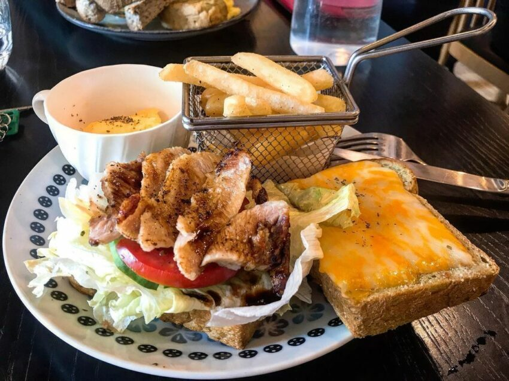

前金區 CALL HE 早午餐
位於寧靜巷弄中的CALL HE早午餐，有早午餐、沙拉、三明治和鬆餅等可以選擇，
來到CALL ME必點的就是吐司，店家的吐司都是手工自製的，使用的原料也都很不錯，
不管是吃抹上蒜香奶油的鹹吐司，還是甜的法國吐司都很好吃。而且不只吐司，
連法國吐司上的果醬、太妃糖醬、奶油也全都是自製的，就能看出CALL ME的用心！

旗山區 旗山紅糟肉
旗山有一間超人氣無名小吃店，雖然沒有招牌，不過只要問在地人絕對都知道！
店內有肉燥飯、肉羹、炒米粉等主食，而最多人點的是他的小菜，
尤其是紅糟肉和手工粉腸都是必點的兩種招牌。紅糟肉外皮酥脆，鹹香帶甜，
帶有厚度的肉吃起來更滿足；粉嫩色澤的手工粉腸，口感軟嫩，配上店家特調的醬汁更好吃。
苓雅區 福記臭豆腐
說到台灣的獨特香氣，第一個想到的就是臭豆腐！
這間福記臭豆腐可是高雄的排隊名店，必點的脆皮臭豆腐外酥內嫩，
吸附滿滿醬汁，搭配酸甜泡菜消除油膩；還有另一個招牌是豆腐捲，
\炸到金黃微酥的腐皮，內餡放入臭豆腐、洋蔥和玉米等配料，喜歡臭香滋味的人絕對不會失望！